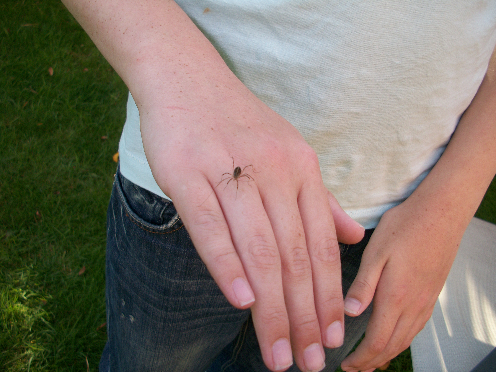

Date: 22 Aug 2009.
Location: probably Rainhill, Merseyside.

Straight pale band down body, flanked by black patches, the rest of the abdomen green-brown; legs banded with black, green-brown and pale yellow-green.